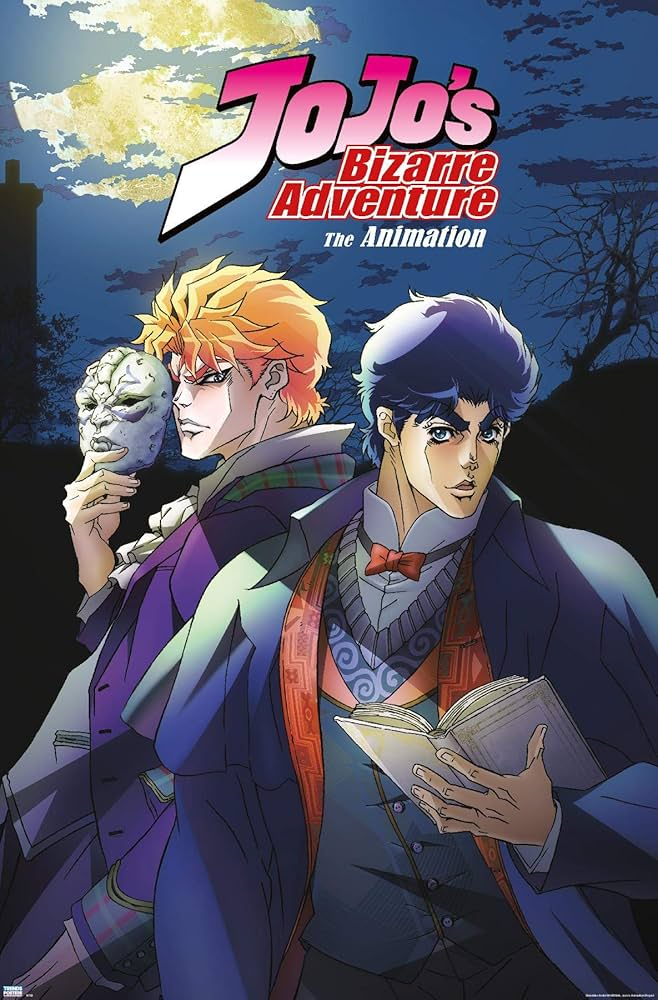

Synopsis
In late 19th-century England, Jonathan Joestar, the young son of a wealthy landowner, meets his new adopted brother, Dio Brando, who loathes him and plans to usurp Jonathan's position as heir to the Joestar family. When Dio's attempts are thwarted, he transforms himself into a vampire using an ancient Stone Mask and destroys the Joestar estate. Jonathan embarks on a journey, meets new allies, and masters the Hamon (波紋; "Ripple") martial arts technique to stop Dio, who has made world domination his new goal.
-Wikipedia
| Characters | Descriptions | Images |
|---|---|---|
| Jonathan Joestar | Jonathan Joestar is main protagonist of Phantom Blood |  |
| George Joestar | George Joestar is the father of Johnathan Joestar |  |
| Dio Brando | The adopted son of the Joestar family, turned main antagonist. |  |
| R.E.O Speedwagon | A back alley street thug turned remarkable ally to Jonathan following their initial encounter |  |
| Erina Pendleton | Jojo's childhood friend turned love intrest who is often the story's damsel in destress |  |
| Will A. Zeppeli | Jonathan's mentor who teaches JoJo Hamon |  td> td>
|
| Straizo | Jonathan's second mentor who teaches JoJo Hamon and aids him in the fight against Dio |  |